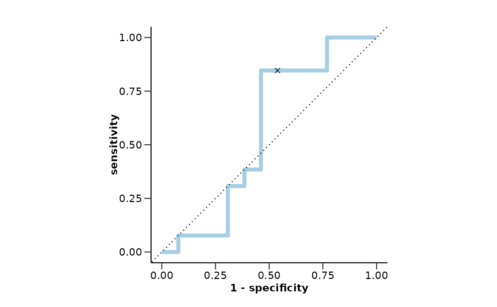
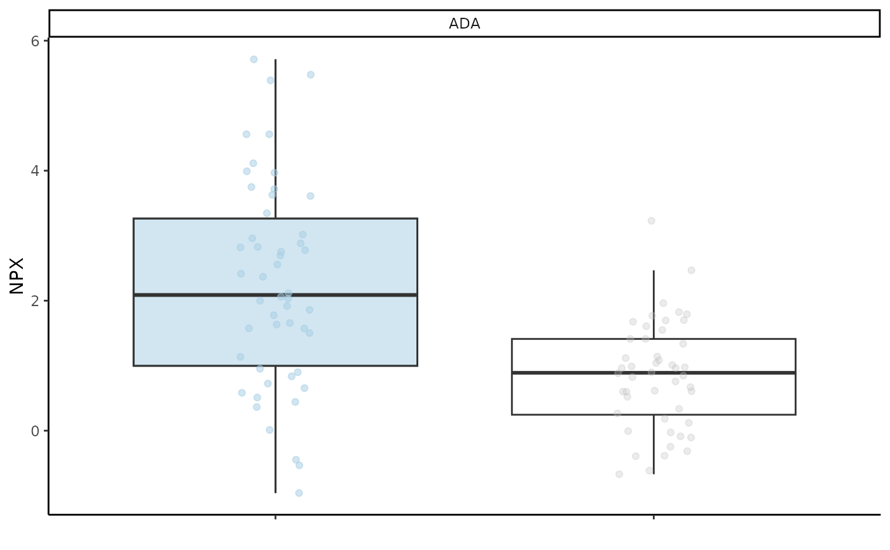

lreg_fit() fits a logistic regression model for a single predictor and calculates
the ROC AUC, accuracy, sensitivity, and specificity. It also performs cross-validation
and plots the ROC curve.
Usage
do_lreg(
olink_data,
metadata,
variable = "Disease",
case,
control,
wide = TRUE,
strata = TRUE,
balance_groups = TRUE,
only_female = NULL,
only_male = NULL,
exclude_cols = "Sex",
ratio = 0.75,
cor_threshold = 0.9,
normalize = TRUE,
cv_sets = 5,
ncores = 4,
palette = NULL,
points = TRUE,
boxplot_xaxis_names = FALSE,
seed = 123
)Arguments
- olink_data
Olink data.
- metadata
Metadata.
- variable
The variable to predict. Default is "Disease".
- case
The case group.
- control
The control groups.
- wide
Whether the data is wide format. Default is TRUE.
- strata
Whether to stratify the data. Default is TRUE.
- balance_groups
Whether to balance the groups. Default is TRUE.
- only_female
Vector of diseases.
- only_male
Vector of diseases.
- exclude_cols
Columns to exclude from the data before the model is tuned.
- ratio
Ratio of training data to test data. Default is 0.75.
- cor_threshold
Threshold of absolute correlation values. This will be used to remove the minimum number of features so that all their resulting absolute correlations are less than this value.
- normalize
Whether to normalize numeric data to have a standard deviation of one and a mean of zero. Default is TRUE.
- cv_sets
Number of cross-validation sets. Default is 5.
- ncores
Number of cores to use for parallel processing. Default is 4.
- palette
The color palette for the plot. If it is a character, it should be one of the palettes from
get_hpa_palettes(). Default is NULL.- points
Whether to add points to the boxplot. Default is TRUE.
- boxplot_xaxis_names
Whether to add x-axis names to the boxplot. Default is FALSE.
- seed
Seed for reproducibility. Default is 123.
Value
A list with two elements:
fit_res: A list with 4 elements:
lreg_wf: Workflow object.
train_set: Training set.
test_set: Testing set.
final: Fitted model.
metrics: A list with the model metrics:
accuracy: Accuracy of the model.
sensitivity: Sensitivity of the model.
specificity: Specificity of the model.
auc: AUC of the model.
conf_matrix: Confusion matrix of the model.
roc_curve: ROC curve of the model.
Examples
# Data with single predictor
test_data <- example_data |> dplyr::filter(Assay == "ADA")
# Run model
do_lreg(test_data,
example_metadata,
variable = "Disease",
case = "AML",
control = "CLL",
wide = FALSE,
ncores = 1,
palette = "cancers12")
#> Joining with `by = join_by(DAid)`
#> Sets and groups are ready. Model fitting is starting...
#> $fit_res
#> $fit_res$lreg_wf
#> ══ Workflow ════════════════════════════════════════════════════════════════════
#> Preprocessor: Recipe
#> Model: logistic_reg()
#>
#> ── Preprocessor ────────────────────────────────────────────────────────────────
#> 4 Recipe Steps
#>
#> • step_normalize()
#> • step_nzv()
#> • step_corr()
#> • step_impute_knn()
#>
#> ── Model ───────────────────────────────────────────────────────────────────────
#> Logistic Regression Model Specification (classification)
#>
#> Computational engine: glm
#>
#>
#> $fit_res$train_set
#> # A tibble: 74 × 3
#> DAid ADA Disease
#> <chr> <dbl> <fct>
#> 1 DA00003 0.952 1
#> 2 DA00004 2.69 1
#> 3 DA00005 3.75 1
#> 4 DA00007 3.99 1
#> 5 DA00008 2.83 1
#> 6 DA00009 3.61 1
#> 7 DA00010 -0.448 1
#> 8 DA00011 2.42 1
#> 9 DA00012 0.725 1
#> 10 DA00013 1.13 1
#> # ℹ 64 more rows
#>
#> $fit_res$test_set
#> # A tibble: 26 × 3
#> DAid ADA Disease
#> <chr> <dbl> <fct>
#> 1 DA00001 5.39 1
#> 2 DA00002 0.0114 1
#> 3 DA00006 2.03 1
#> 4 DA00016 0.655 1
#> 5 DA00022 5.71 1
#> 6 DA00023 0.582 1
#> 7 DA00034 0.510 1
#> 8 DA00035 2.82 1
#> 9 DA00038 1.66 1
#> 10 DA00039 -0.959 1
#> # ℹ 16 more rows
#>
#> $fit_res$final
#> ══ Workflow [trained] ══════════════════════════════════════════════════════════
#> Preprocessor: Recipe
#> Model: logistic_reg()
#>
#> ── Preprocessor ────────────────────────────────────────────────────────────────
#> 4 Recipe Steps
#>
#> • step_normalize()
#> • step_nzv()
#> • step_corr()
#> • step_impute_knn()
#>
#> ── Model ───────────────────────────────────────────────────────────────────────
#>
#> Call: stats::glm(formula = ..y ~ ., family = stats::binomial, data = data)
#>
#> Coefficients:
#> (Intercept) ADA
#> 0.07685 1.55066
#>
#> Degrees of Freedom: 73 Total (i.e. Null); 72 Residual
#> Null Deviance: 102.6
#> Residual Deviance: 76.54 AIC: 80.54
#>
#>
#> $metrics
#> $metrics$accuracy
#> [1] 0.65
#>
#> $metrics$sensitivity
#> [1] 0.85
#>
#> $metrics$specificity
#> [1] 0.46
#>
#> $metrics$auc
#> [1] 0.56
#>
#> $metrics$conf_matrix
#> Truth
#> Prediction 0 1
#> 0 11 7
#> 1 2 6
#>
#> $metrics$roc_curve

#>
#>
#> $boxplot_res

#>